Usage
gamLine(x, y, col, log.x, log.y, spread = FALSE, smoother.args) loessLine(x, y, col, log.x, log.y, spread = FALSE, smoother.args) quantregLine(x, y, col, log.x, log.y, spread = FALSE, smoother.args)
Arguments
- x
- $x$ coordinates of points.
- y
- $y$ coordinates of points.
- col
- line color.
- log.x
TRUEif the $x$-axis is logged.- log.y
TRUEif the $y$-axis is logged.- spread
- the default is to plot only an estimated mean or median. If this argument is TRUE, then a measure of spread is also plotted.
- smoother.args
- additional options accapted by the smoother, in the form of a list of named values (see Details below).
Description
These smoothers are used to draw nonparametric-regression lines on scatterplots produced by
the scatterplot, scatterplotMatrix and other car functions.
The functions aren't meant to
be called directly by the user, although the user can supply options via the smoother.args argument,
the contents of which vary by the smoother (see Details below). The gamLine smoother uses the
gam function in the mgcv package, the loessLine smoother uses the
loess function in the stats package, and the quantregLine smoother uses the
rqss function in the quantreg package.
Details
The function loessLine is a reimplementation of the loess smoother
that has been used in car prior to September 2012. The only enhancement is the ability to
set more arguments through the smoother.args argument.
The function gamLine is new and more general than the loess fitting
because it allows fitting a generalized additive model using splines. You can specify a error
distribution and link function.
The function quantregLine fits an additive model using splines with estimation
based on L1 regression and quantile regression if you ask for the spread. It is
likely to be more robust than the other smoothers.
The argument smoother.args is a list of named elements used to pass
additional arguments to the smoother.
For loessLine the default value is
smoother.args=list(lty=1, lwd=2, lty.spread=2, lwd.spread=1, span=0.5,
degree=2, family="symmetric", iterations=4).
The arguments lty and lwd are the type and width
respectively of the mean or median smooth, smooth.lty
and smooth.lwd are the type and color of the spread smooths if requested.
The arguments span, degree and family are
passed to the loess function, iterations=0 by default
specifies no robustness iterations.
For gamLine the default is
smoother.args=list(lty=1, lwd=2, lty.spread=2, lwd.spread=1,
k=-1, bs="tp", family="gaussian", link=NULL, weights=NULL)
The first for arguments are as for loessLine. The next two
arguments are passed to the gam function to control the smoothing:
k=-1 allows gam to choose the number of splines in the basis
function; bs="tp" provides the type of spline basis to be used with "tp"
for the default thin-plate splines. The last three arguments allow providing
a family, link and weights as in generalized linear models. See examples
below.
For quantregLine the default is
smoother.args=list(lty=1, lwd=2, lty.spread=2, lwd.spread=1,
lambda=IQR(x). The first four
arguments are as for loessLine. The last argument is passed to the
qss function in quantreg. It is a smoothing
parameter, here a robust estimate of the scale of the horizontal axis variable.
This is an arbitrary choice, and may not work well in all circumstances.
Examples
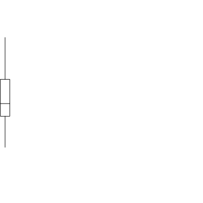
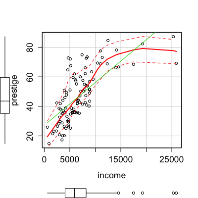
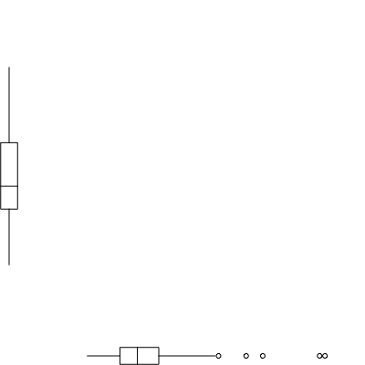
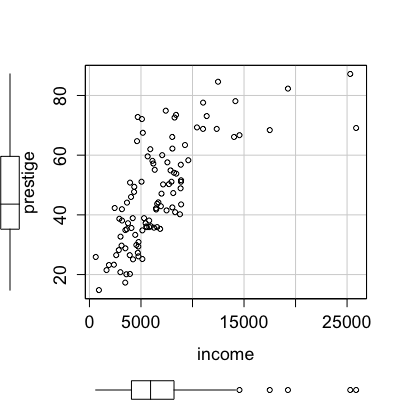
Warning message: matrix not positive definite Warning message: matrix not positive definite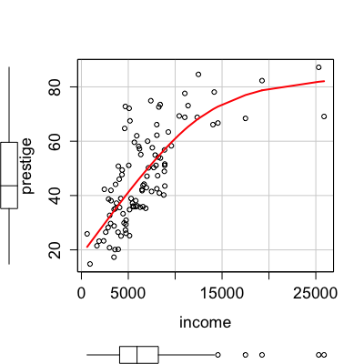
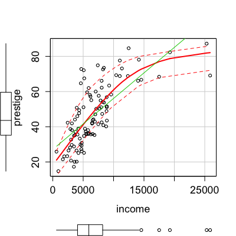
Loading required package: MatrixModels Warning message: there is no package called ‘MatrixModels’ Loading required package: MatrixModels Warning message: there is no package called ‘MatrixModels’ Loading required package: MatrixModels Warning message: there is no package called ‘MatrixModels’
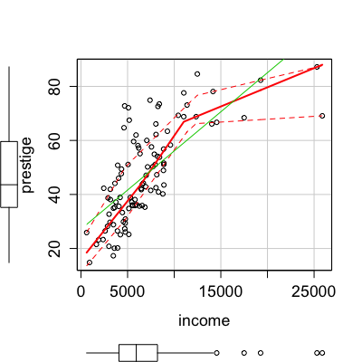
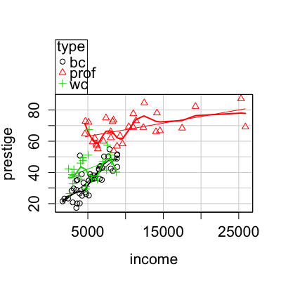
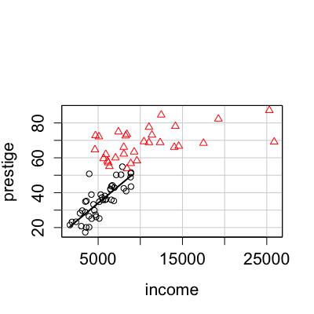
Warning message: matrix not positive definite Warning message: matrix not positive definiteLoading required package: MatrixModels Warning message: there is no package called ‘MatrixModels’ Loading required package: MatrixModels Warning message: there is no package called ‘MatrixModels’
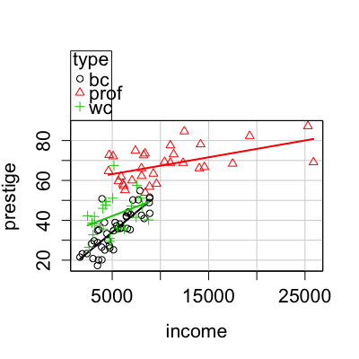
Loading required package: MatrixModels Warning message: there is no package called ‘MatrixModels’
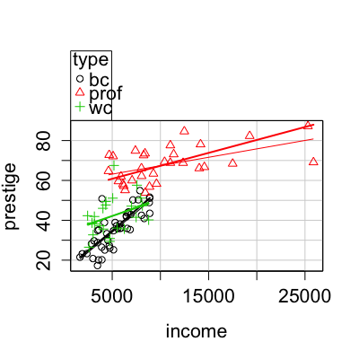
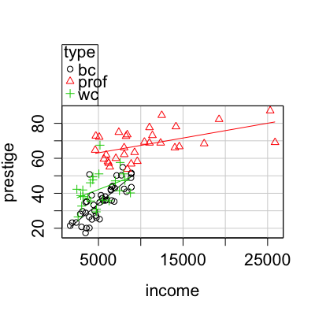
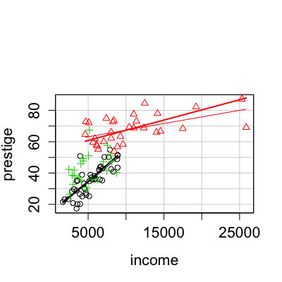
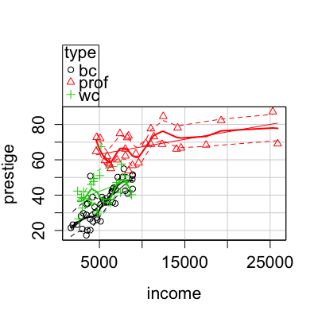
Warning message: matrix not positive definite Warning message: matrix not positive definite Warning message: matrix not positive definite Warning message: matrix not positive definite Warning message: matrix not positive definite Warning message: matrix not positive definite Warning message: matrix not positive definite Warning message: matrix not positive definite Warning message: matrix not positive definite Warning message: matrix not positive definiteWarning message: matrix not positive definite Warning message: matrix not positive definite
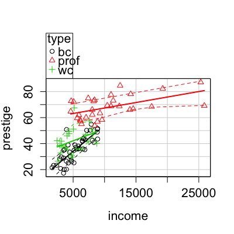
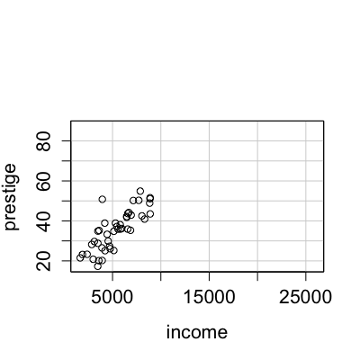
Loading required package: MatrixModels Warning message: there is no package called ‘MatrixModels’ Loading required package: MatrixModels Warning message: there is no package called ‘MatrixModels’ Loading required package: MatrixModels Warning message: there is no package called ‘MatrixModels’ Loading required package: MatrixModels Warning message: there is no package called ‘MatrixModels’ Loading required package: MatrixModels Warning message: there is no package called ‘MatrixModels’ Loading required package: MatrixModels Warning message: there is no package called ‘MatrixModels’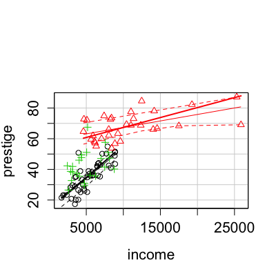
Loading required package: MatrixModels Warning message: there is no package called ‘MatrixModels’ Loading required package: MatrixModels Warning message: there is no package called ‘MatrixModels’ Loading required package: MatrixModels Warning message: there is no package called ‘MatrixModels’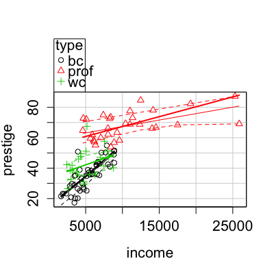
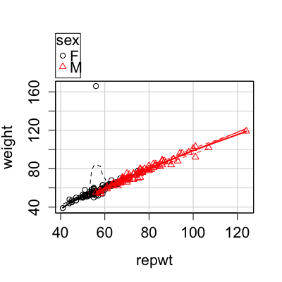
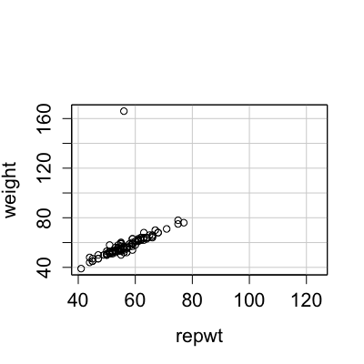
Warning message: matrix not positive definite Warning message: matrix not positive definite Warning message: matrix not positive definite Warning message: matrix not positive definite Warning message: matrix not positive definite Warning message: matrix not positive definiteWarning message: matrix not positive definite Warning message: matrix not positive definite Warning message: matrix not positive definite Warning message: matrix not positive definite Warning message: matrix not positive definite Warning message: matrix not positive definite
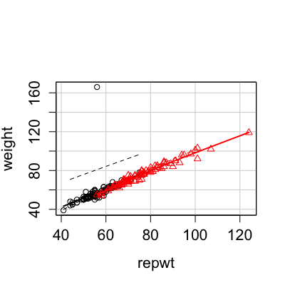
Warning message: NaNs produced Loading required package: MatrixModels Warning message: there is no package called ‘MatrixModels’ Loading required package: MatrixModels Warning message: there is no package called ‘MatrixModels’ Loading required package: MatrixModels Warning message: there is no package called ‘MatrixModels’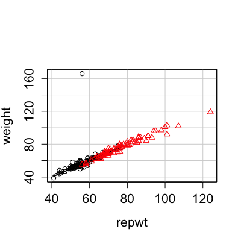
Loading required package: MatrixModels Warning message: there is no package called ‘MatrixModels’ Loading required package: MatrixModels Warning message: there is no package called ‘MatrixModels’ Loading required package: MatrixModels Warning message: there is no package called ‘MatrixModels’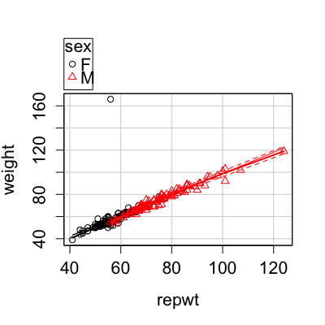
set.seed(12345) w <- 1 + rpois(100, 5) x <- rnorm(100) p <- 1/(1 + exp(-(x + 0.5*x^2))) s <- rbinom(100, w, p) scatterplot(s/w ~ x, smoother=gamLine, smoother.args=list(family="binomial", weights=w))Error in eval(expr, envir, enclos): object 'w' not foundscatterplot(s/w ~ x, smoother=gamLine, smoother.args=list(family=binomial, link="probit", weights=w))Error in eval(expr, envir, enclos): object 'w' not foundscatterplot(s/w ~ x, smoother=gamLine, smoother.args=list(family=binomial, link="probit", weights=w))Error in eval(expr, envir, enclos): object 'w' not found Error in eval(expr, envir, enclos): object 'w' not found Error in eval(expr, envir, enclos): object 'y' not found


See also
scatterplot, scatterplotMatrix, gam,
loess, and rqss.